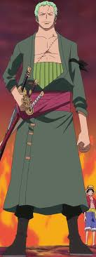
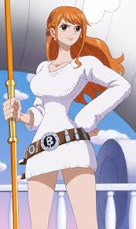
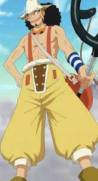
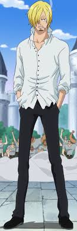
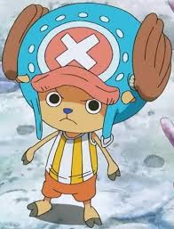
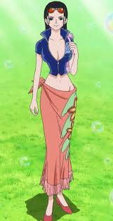

My 1st Project
Hello, my name is Noah Harvey I'm a student at Code Louisville and welcome to my first side project, this page will go over the crew main cast of my favorite anime of all time; One Piece.

Captain: Monkey D. Luffy
Monkey D. Luffy is the captain of the crew, he has the Gomu Gomu no Mi or the "Rubber-Rubber fruit, which gives him the power to make his body like rubber. He hopes to travel the seas with his friends and discover the great treasure called the ONE PIECE, and take his claim as King Of The Pirates

Swordsman: Roronoa Zoro
Roronoa Zoro is the first-mate of the Straw-Hat Crew, he has no devil fruit, and relies on his immense power and swordsman skills to defeat his oppents. He strives to be the Worlds Greatest Swordsman!

Navigator: Nami
Nami is the Navigator of the crew, like zoro she has no devil fruit, but constantly shows us that she has a special set of skills for navigation like no other. She hopes to travel the seas in order to Draw a Map Of The Whole World.

Sniper: Ussop
Ussop is the crew's Sniper, he also doesn't have devil fruit or honestly any special skills like zoro and nami, but he does have the courage to chase his dreams and run through obstacles that stand in the way of that dream. He strives to be A Brave Warrior of The Sea.

Cook: Vinsmoke Sanji
Sanji is the crew's cook. No devil fruit for Sanji neither but like zoro he has immense power, which allows him to easily defeat opponets with his powerful kicks. He strvies to find the All-Blue, a sea where seafoods all of kinds can be found.

Doctor: Tony-Tony Chopper
Chopper is the doctor of the crew, his devil fruit is the Hito-Hito no Mi or the "Human-Human Fruit" which gives him the ability to transform into a human hybrid(which is why he can talk), He strives to cure every disease in the World.

Archaeologist: Nico Robin
Robin is the Archaeologist of the crew, she has the Hana-Hana no Mi or the "Flower-Flower Fruit" which gives her the ability to sprout limbs from her body, she comes from an island of Archaeologist that was destroyed by the World Govt. due to them conducting research of the goverment's past. Due to this she strvies to discover the Truth of the World.
Contact
Contact me below with any reccomendations or tips to make this project better!
- Phone: 502-810-7423
- Email: Harvey9099@gmail.com